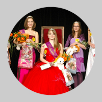
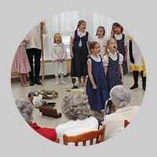
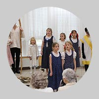
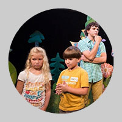

6. 2. 2014 | 23.06 | Radka Tesárková
5. února byly rozeslány přihlášky na Putování s huculem 2014.
6. 2. 2014 | 22.59 | Radka Tesárková
V sobotu 1. 2. 2014 proběhlo oblastní kolo soutěže pro dívky ve věku od 13 do 15 let pod názvem Dívka roku 2014. Výsledky soutěže: 1. místo - Gabriela Alexandrová, 2. místo - Anna Šollová, 3. místo - Tereza Šandová a cenu diváků získala Veronika Špitálská. Děvčata nejen, že předvedla ty nejlepší výkony, ale i se dobře pobavila. Celá akce byla doprovázena bohatým programem, a to tancem, šermem, kytarovým vystoupením, divadelní ukázkou či extravagantní módní přehlídkou.

{kind=link}
16. 1. 2014 | 9.25 | Radka Tesárková
Vážení diváci! Omlouváme se, ale z technických důvodů se ruší představení dne 25. ledna Kniha džunglí. Omlouváme se a zveme vás na další představení tohoto titulu a to ve středu 12. února od 18.00 hodin v Divadle Radar. Děkujeme za pochopení. Ty-já-tr.
4. 1. 2014 | 14.15 | Radka Tesárková
Přesně na Tři krále se děti z divadelního souboru Ty-já-tr vydaly do domovů seniorů ve Mšeně a v Mělníku, aby babičkám a dědečkům zahrály Rakovnickou hru vánoční. Inscenace se seniorům líbila a dokonce si spolu s dětskými herci na závěr zazpívali i řadu koled. A nutno podotknout, že jsou výborní zpěváci! Už teď se všichni těší na další společní setkání. Fotografie jsou z Centra seniorů v Mělníku. Foto: Adriana Rohde Kabele


{kind=link}
{kind=link}
{kind=link}
{kind=link}
{kind=link}
{kind=link}
{kind=link}
{kind=link}
{kind=link}
{kind=link}
23. 12. 2013 | 19.00 | Radka Tesárková
Spokojené prožití svátků vánočních a v novém roce jen úžasné divadelní zážitky přeje všem svým příznivcům Ty-já-tr.
16. 12. 2013 | 19.00 | Radka Tesárková
Vážení přátelé, milí účastníci projektu Čtenář na jevišti,
po dlouhém a náročném hodnocení dospěla pětičlenná porota k závěru a vybrala 5 nejzajímavějších inscenací. Volba to byla opravdu těžká, všechna představení jsou zajímavá a za všemi je vidět velký kus práce.
Do projektu zaslalo svou dramatizaci celkem 49 souborů. Videa a materiály, které jste zasílali, se nacházejí v různé fázi, v různé kvalitě a jsou to jen videa, neschopná postihnout mnohé podstatné a zároveň nemilosrdně odhalující kdejakou nepodstatnost. Porota se snažila odhlédnout od všech rušivých vjemů a vnímat obsah, práci a snahu dětí, která byla u všech úžasná.
Každý účastník si zaslouží naše velké poděkování za účast v projektu a zároveň velkou gratulaci za inspirativní aktivitu, kterou předvedl. Zároveň nás těší, že děti si našly cestu k literárnímu textu, že se učily s ním pracovat a dále jej interpretovat.
Rozhodli jsme se každému souboru zaslat poštou malou odměnu, zároveň v nejbližších dnech také každému souboru zvlášť zašleme naše hodnocení a postřehy, které, jak věříme, budou užitečné pro vaši práci do budoucna.
Vybranými soubory v náhodném řazení jsou:
Sekunda A Gymnázium Fr. Křižík a zákl. škola Plzeň, pod vedením Mgr. Jana Anderleho s inscenací Hanin kufřík
DDS Ty-já-tr Před oponou DDM Praha 7, pod vedením Radky Tesárkové s inscenací Středa nám chutná
5. třída ZŠ Raduň, pod vedením Mgr. Šárky Králové s inscenací Vadí, nevadí
Dramadlo ZUŠ Louny, pod vedením Bc. Mileny Nečesané s inscenací Nevhodná pohádka
Divadlo Bum Trach ZŠ s polským jazykem vyučovacím Český Těšín, pod vedením Marie Szymanikové s inscenací Loupežné vikingské výpravy
2. 12. 2013 | 10.31 | Radka Tesárková
Putování s huculem se v letošní sezóně uskuteční v termínu od 10. do 20. července 2014. Termín odevzdání přihlášek bude oznámen na webu. Maximální počet účastníků je 25. Přednostní právo přihlášek mají účastníci Putování s huculem 2013.
21. 11. 2013 | 13.29 | Radka Tesárková
Vážení diváci, z technických důvodů se premiéra inscenace Archa Noemova přesouvá na 14. prosince. Děkujeme za pochopení.
14. 11. 2013 | 19.10 | Radka Tesárková
V Divadle Radar se začalo topit! Hurá! Od pondělí 18. listopadu bude opět výuka všech kroužků a výběrových souborů probíhat v divadle. Děkujeme všem za trpělivost a těšíme se na teplo.
13. 11. 2013 | 13.07 | Radka Tesárková
Konečně přišel ten okamžik, na který se všichni účastníci Putování s huculem 2013 těšili – předání peněz Unii Roska. Peníze jsme předali po 35.repríze inscenace hry Williama Shakespeara Romeo a Julie. Je to přesně 12.585 Kč! Děkujeme všem, kteří přispěli! A jak bude s penězi naloženo?! To se brzy od pana Karla Hrkala, předsedy Unie Roska, který od Radka Tesárkové peníze v Radaru převzal, brzy dozvíme.
Posláním Unie Roska je pomáhat lidem s roztroušenou sklerózou žít kvalitní důstojný a plnohodnotný život.
{kind=link}
{kind=link}
{kind=link}
{kind=link}
{kind=link}
{kind=link}
{kind=link}
{kind=link}
28. 10. 2013 | 13.43 | Webmaster
V době podzimních prázdnin (29.a 30. října) se výuka v kroužcích Ty-já-tru nekoná.
23. 10. 2013 | 22.22 | Jana Kottasová
Soustředění divadelních kroužků TY-JÁ-TR 2013
(Písklata 1,2, Fleky, Natruc)
Termín: 29.11.-1.12. 2013
Místo konání: klášter Mnichovo Hradiště
Odjezd: Pátek 29.11. 16:00 sraz Černý most u výstupu z metra (odjezd 16:20)
Příjezd: Neděle 1.12. 16:40 u pokladen na Hlavním nádraží
Cena: 1100,-
Nejpozději do 22.11.2013 je potřeba odevzdat závaznou přihlášku, údaje o zdravotním stavu účastníka, bezinfekčnost a částku 1100,- . Můžete odevzdat i dříve vedoucím kroužku.
Seznam věcí: závazná přihláška, kartička pojištěnce, údaje o zdravotním stavu účastníka, bezinfekčnost, hrneček, osobní hygiena, ručník, pyžamo, spodní prádlo, ponožky (víc), kalhoty na ven (teplé nepromokavé), tepláky dovnitř, přezuvky, teplé nepromokavé boty, dvě trika s dl. rukávem, mikina, bunda, čepice, rukavice, ŠÁTEK (na hry), tužka, blok, případně nějakou hru. Ostatní podle uvážení, nebrat toho moc - děti si to pravděpodobně samy kus ponesou.
Vedoucí soustředění:
Jana Kottasová
jana.kottasova@centrum.cz
+420603262052
Vendula Hlásková
wendy.hlaskova@gmail.com
+420774724402
Závazná přihláška ke stažení zde
Potvrzení o bezinfekčnosti a údaje o zdravotním stavu účastníka, formulář ke stažení zde
23. 10. 2013 | 22.18 | Radka Tesárková
V Ty-já-tru jsou samé šikovné děti! Pravidelně natáčí v Studio Kamarád! Především s Tomášem Kugelem a Filipem Cílem zpívají hezké písničky. Jak to v České televizi bavilo (a hlavně, jak jim to šlo) Barborku Suchou, Jessicu Bažantovou a Radana Tutka, se můžete podívat na fotoreportáži, z natáčení, kterou vám nabízíme.

{kind=link}
{kind=link}
{kind=link}
{kind=link}
{kind=link}
{kind=link}
{kind=link}
{kind=link}
{kind=link}
{kind=link}
Aktualizace: 6. února 2014
starší<<< >>> novější